SECCIÓN 9P
PUERTAS
Precaución: Desconecte el cable negativo de la batería antes de desmontar o instalar cualquier unidad eléctrica o cuando exista la posibilidad de que una herramienta o equipo pueda entrar en contacto con bornes eléctricos expuestos. La desconexión de dicho cable ayudará a evitar lesiones personales y daños al vehículo. La llave de contacto debe estar en posición LOCK a menos que se indique lo contrario.
ESPECIFICACIONES
Especificaciones de apriete de la sujeción
| Aplicación | N•m | Árbol de transmisión izquierdo | Articulación |
| Tira de estanqueidad exterior de ventanilla | 1.3 | - | 12 |
| Aplique de ventanilla delantera | 1.3 | - | 12 |
| Tornillos de aplique de ventanilla trasera | 1.3 | - | 12 |
| Tornillos del guarnecido de la puerta delantera | 3 | - | 27 |
| Tornillos del guarnecido de la puerta delantera | 3 | - | 27 |
| Tornillos de retención de ventanilla trasera | 10 | - | 89 |
| Tornillos de retención de ventanilla trasera | 10 | - | 89 |
| Tornillos de fijación de la varilla para mantener abierta la puerta a la carrocería | 20 | 15 | - |
| tornillos de fijación de la bisagra de la puerta a la carrocería | 27.5 | 20 | - |
| Tornillos del cerradero de la puerta | 24 | 18 | - |
| Tornillos de la cerradura de la puerta delantera | 10 | - | 89 |
| Tornillos del tirador exterior de la puerta | 4,5 | - | 40 |
| Tuercas del elevalunas | 10 | - | 89 |
DIAGRAMAS DE ESQUEMAS Y DIRECCIONES
Circuito del sistema de cierre de las puertas
1) Circuito del actuador
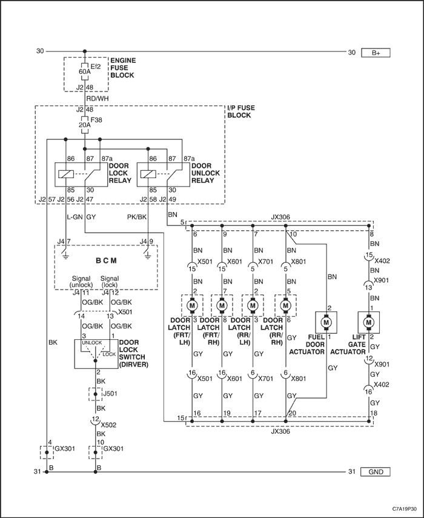


2) Circuito del cierre
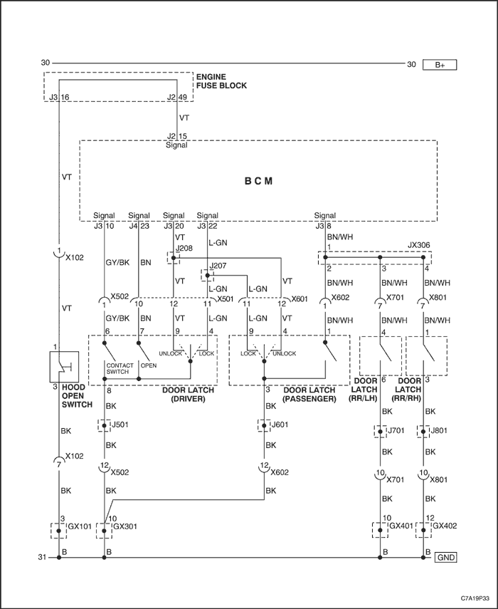
3) Circuito del interbloqueo
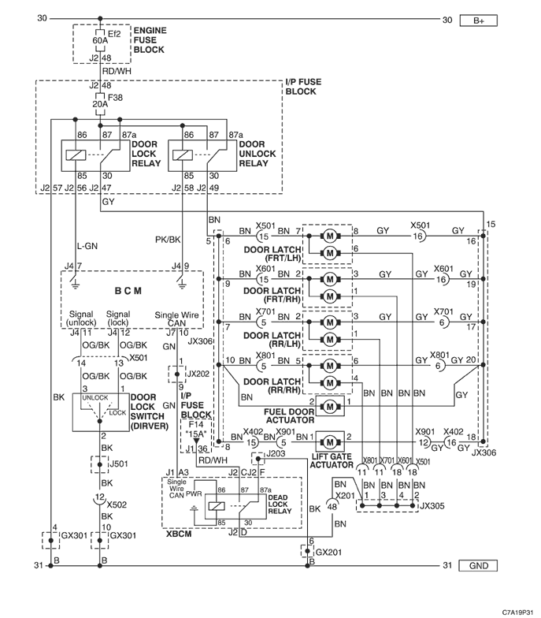
Ventanillas eléctricas
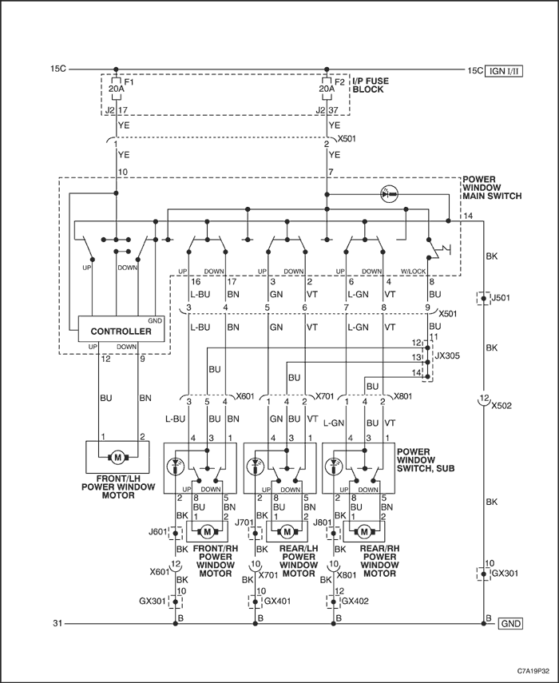
DIAGNÓSTICO
Síntomas - Puertas
Inspección visual/física
Varios de los procedimientos basados en síntomas requieren una comprobación física y visual cuidadosa. Este paso es sumamente importante, con él podría corregirse un problema sin tener que hacer más comprobaciones, ahorrándose un tiempo muy valioso. Entre dichas comprobaciones se incluyen:
- Comprobar si se puede acceder o ver fácilmente los componentes del sistema y conectores del cableado para verificar si hay daños o anomalías obvias que pudieran causar el síntoma.
Intermitentes
Importante: Compruebe si los componentes eléctricos están bien instalados o si hay algún fallo intermitente. Compruebe si después de la compra del vehículo se ha añadido dispositivos antirrobo, teléfonos móviles o luces. Asegúrese de que no se hayan añadido equipos que vayan conectados al circuito de clase 2. Si no se puede localizar un fallo intermitente, la razón tal vez sea la señal de un teléfono móvil. El cableado o las conexiones eléctricas defectuosas también pueden ser la causa de fallos intermitentes.
Importante: El problema puede dejar registrado o no un DTC. No use las tablas de síntomas para diagnosticar fallos intermitentes. El fallo debe estar produciéndose para poder localizar el problema.
La mayoría de las veces los fallos intermitentes se deben a malas conexiones eléctricas o a cables defectuosos. Realice una comprobación visual/física exhaustiva en busca de lo siguiente:
- Mal acoplamiento de las mitades del conector o algún terminal que no se haya acoplado bien en el cuerpo del conector.
- Terminal dañado o mal conformado.
- Arregle o sustituya los terminales del conector en el circuito problemático para asegurarse de que la tensión de contacto es la adecuada.
- Una mala conexión entre el terminal y el cable requiere desmontar el terminal del cuerpo del conector para realizar la comprobación.
Ventanillas eléctricas
Los elevalunas eléctricos no funcionan - Ninguno
| Paso | Medida | Valor(es) | Sí | No |
| 1 | ¿Se ha realizado la Comprobación del sistema de diagnóstico del vehículo? | - | Vaya al Paso 2 | Compruebe el vehículo con el scanner. |
| 2 | Accione los interruptores de todos los elevalunas eléctricos. ¿Funcionan bien todos los elevalunas eléctricos al accionar sus interruptores? | - | | Vaya al Paso 3 |
| 3 | ¿Funciona algún elevalunas eléctrico al accionar su interruptor? | - | | Vaya al Paso 4 |
| 4 | - Desenchufe el conector del interruptor principal de los elevalunas eléctricos.
- Gire la llave de contacto a la posición ON, sin encender el motor.
- Conecte una lámpara de pruebas entre una buena masa y el circuito de tensión de los accesorios del conector del interruptor principal de los elevalunas eléctricos.
¿Se enciende la lámpara de pruebas? | - | Vaya al Paso 5 | Vaya al Paso 6 |
| 5 | Conecte una lámpara de pruebas entre el circuito de tensión de los accesorios y el circuito de conexión a masa del conector del interruptor principal de los elevalunas eléctricos. ¿Se enciende la lámpara de pruebas? | - | Vaya al Paso 10 | Vaya al Paso 13 |
| 6 | - Gire la llave de contacto a la posición OFF.
- Desmonte el relé de los elevalunas.
- Conecte una lámpara de pruebas entre una buena masa y el circuito de tensión positiva de la batería del relé de los elevalunas eléctricos en el conector del cableado de dicho relé.
¿Se enciende la lámpara de pruebas? | - | Vaya al Paso 8 | Vaya al Paso 7 |
| 7 | Compruebe los siguientes circuitos del interruptor principal de los elevalunas eléctricos para ver si están derivados a masa: - Control hacia arriba-delante-izquierda del motor del elevalunas eléctrico
- Control hacia arriba-delante-abajo del motor del elevalunas eléctrico
- Señal arriba-atrás-izquierda del interruptor maestro del elevalunas eléctrico
- Señal abajo-atrás-izquierda del interruptor maestro del elevalunas eléctrico
- Señal de bloqueo del interruptor maestro del elevalunas eléctrico de la ventanilla tras. izq.
- Señal de bloqueo del interruptor maestro del elevalunas eléctrico de la ventanilla tras. dch.
- Señal arriba-atrás-derecha del interruptor maestro del elevalunas eléctrico
- Señal abajo-atrás-derecha del interruptor maestro del elevalunas eléctrico
- Control hacia arriba-delante-derecha del motor del elevalunas eléctrico
- Control hacia abajo-delante-derecha del motor del elevalunas eléctrico
- Control hacia arriba-atrás-izquierda del motor del elevalunas eléctrico
- Control hacia abajo-atrás-izquierda del motor del elevalunas eléctrico
- Control hacia arriba-atrás-derecha del motor del elevalunas eléctrico
- Control hacia abajo-atrás-derecha del motor del elevalunas eléctrico
¿Se ha encontrado y corregido la anomalía? | - | Vaya al Paso 17 | Vaya al Paso 12 |
| 8 | Conecte una lámpara de pruebas entre el circuito de tensión positiva de la batería y el circuito de conexión a masa del conector del relé de los elevalunas eléctricos. ¿Se enciende la lámpara de pruebas? | - | Vaya al Paso 9 | Vaya al Paso 14 |
| 9 | Compruebe el circuito de tensión de los accesorios del interruptor principal de los elevalunas eléctricos en busca de alguna interrupción o alta resistencia. ¿Se ha encontrado y corregido la anomalía? | - | Vaya al Paso 17 | Vaya al Paso 11 |
| 10 | Compruebe si hay malas conexiones en el conector del interruptor principal de los elevalunas eléctricos. ¿Se ha encontrado y corregido la anomalía? | - | Vaya al Paso 17 | Vaya al Paso 16 |
| 11 | Compruebe si hay malas conexiones en el conector del relé de los elevalunas eléctricos. ¿Se ha encontrado y corregido la anomalía? | - | Vaya al Paso 17 | Vaya al Paso 15 |
| 12 | Repare la derivación a masa en el circuito de tensión de los accesorios del interruptor principal de los elevalunas eléctricos. ¿Se ha realizado la reparación? | - | Vaya al Paso 17 | - |
| 13 | Repare la interrupción o alta resistencia en el circuito de conexión a masa del interruptor principal de los elevalunas eléctricos. ¿Se ha realizado la reparación? | - | Vaya al Paso 17 | - |
| 14 | Repare la interrupción o alta resistencia en el circuito de conexión a masa del relé de los elevalunas eléctricos. ¿Se ha realizado la reparación? | - | Vaya al Paso 17 | - |
| 15 | Sustituya el relé de los elevalunas. ¿Se ha realizado la sustitución? | - | Vaya al Paso 17 | - |
| 16 | Sustituya el interruptor principal de los elevalunas eléctricos. ¿Se ha realizado la sustitución? | - | Vaya al Paso 17 | - |
| 17 | Ponga en marcha el sistema para verificar la reparación. ¿Se ha corregido la anomalía? | - | Sistema OK | Vaya al Paso 2 |
Los elevalunas eléctricos no funcionan - Uno (elevalunas delanteros)
Descripción de la prueba
El número siguiente hace referencia al paso que aparece en la tabla de diagnóstico:
Si los elevalunas eléctricos traseros funcionan correctamente con el interruptor principal, puede asumirse que los circuitos de conexión a masa y de tensión de los accesorios están bien.
- Los interruptores de los elevalunas eléctricos traseros del interruptor principal comparten los mismos circuitos de conexión a masa y de tensión de los accesorios con las ventanillas delanteras.
| Paso | Medida | Valor(es) | Sí | No |
| 1 | ¿Se ha revisado la Descripción y funcionamiento de los elevalunas eléctricos? | - | Vaya al Paso 2 | |
| 2 | - Gire la llave de contacto a la posición ON, sin encender el motor.
- Accione los elevalunas eléctricos con el interruptor principal.
Accione los interruptores de todos los elevalunas eléctricos. ¿Funcionan bien todos los elevalunas eléctricos al accionar sus interruptores? | - | | Vaya al Paso 3 |
| 3 | Accione los elevalunas eléctricos traseros con el interruptor principal. ¿Funcionan correctamente los elevalunas traseros? | - | Vaya al Paso 4 | Vaya a Los elevalunas eléctricos no funcionan - Ninguno |
| 4 | - Desconecte el motor del elevalunas eléctrico delantero que no funcione.
- Conecte una lámpara de pruebas a una buena masa.
- Pruebe el circuito hacia arriba del motor del elevalunas eléctrico en el conector del cableado de dicho motor.
- Accione el interruptor del elevalunas eléctrico hacia arriba.
¿Se enciende la lámpara de pruebas? | - | Vaya al Paso 5 | Vaya al Paso 7 |
| 5 | - Con la lámpara de pruebas todavía conectada a una buena masa, pruebe el circuito hacia abajo del motor del elevalunas eléctrico en el conector del cableado de dicho motor.
- Accione el interruptor del elevalunas eléctrico hacia abajo.
¿Se enciende la lámpara de pruebas? | - | Vaya al Paso 6 | Vaya al Paso 8 |
| 6 | - Conecte una lámpara de pruebas entre los circuitos hacia arriba y hacia abajo del motor del elevalunas eléctrico en el conector del cableado de dicho motor.
- Accione el interruptor del elevalunas eléctrico hacia arriba y hacia abajo.
¿Se enciende la lámpara de pruebas en ambas direcciones? | - | Vaya al Paso 10 | Vaya al Paso 9 |
| 7 | Circuito abierto o derivado a masa. ¿Se ha encontrado y corregido la anomalía? | - | Vaya al Paso 13 | Vaya al Paso 9 |
| 8 | Compruebe si hay alguna interrupción, derivación a masa o alta resistencia en el circuito hacia abajo del motor del elevalunas eléctrico. ¿Se ha encontrado y corregido la anomalía? | - | Vaya al Paso 13 | Vaya al Paso 10 |
| 9 | Compruebe si hay malas conexiones en el interruptor principal de los elevalunas eléctricos. ¿Se ha encontrado y corregido la anomalía? | - | Vaya al Paso 13 | Vaya al Paso 11 |
| 10 | Compruebe si hay malas conexiones en el motor del elevalunas eléctrico. ¿Se ha encontrado y corregido la anomalía? | - | Vaya al Paso 13 | Vaya al Paso 12 |
| 11 | Sustituya el interruptor principal de los elevalunas eléctricos. ¿Se ha realizado la sustitución? | - | Vaya al Paso 13 | - |
| 12 | Sustituya el motor del elevalunas eléctrico. ¿Se ha realizado la sustitución? | - | Vaya al Paso 13 | - |
| 13 | Ponga en marcha el sistema para verificar la reparación. ¿Se ha corregido la anomalía? | - | Sistema OK | Vaya al Paso 2 |
Los elevalunas eléctricos no funcionan - Uno (elevalunas traseros)
| Paso | Medida | Valor(es) | Sí | No |
| 1 | ¿Se ha revisado la Descripción y funcionamiento de los elevalunas eléctricos? | - | Vaya al Paso 2 | |
| 2 | - Gire la llave de contacto a la posición ON, sin encender el motor.
- Desactive el interruptor de bloqueo de los elevalunas.
- Suba y baje los elevalunas traseros con el interruptor principal de los elevalunas eléctricos y con el interruptor de cada elevalunas.
¿Funcionan correctamente los elevalunas traseros con ambos interruptores? | - | | Vaya al Paso 3 |
| 3 | ¿Funciona algún elevalunas trasero con el interruptor principal pero no con el interruptor de dicho elevalunas? | - | Vaya al Paso 5 | Vaya al Paso 4 |
| 4 | ¿Funciona algún elevalunas trasero con su interruptor pero no con el interruptor principal? | - | Vaya al Paso 6 | Vaya al Paso 7 |
| 5 | - Desconecte el interruptor del elevalunas eléctrico del pasajero.
- Conecte una lámpara de pruebas entre una buena masa y el circuito de control de bloqueo de elevalunas en el conector del cableado del interruptor del elevalunas del pasajero.
¿Se enciende la lámpara de pruebas? | - | Vaya al Paso 17 | Vaya al Paso 12 |
| 6 | ¿Funciona el elevalunas del conductor con el interruptor principal de los elevalunas eléctricos? | - | Vaya al Paso 20 | Vaya a Los elevalunas eléctricos no funcionan - Ninguno |
| 7 | - Desconecte el motor del elevalunas eléctrico del pasajero.
- Conecte una lámpara de pruebas entre una buena masa y el circuito hacia arriba del motor en el conector del cableado del motor del elevalunas del pasajero.
- Accione el elevalunas eléctrico del pasajero hacia arriba con el interruptor principal de los elevalunas eléctricos.
¿Se enciende la lámpara de pruebas? | - | Vaya al Paso 8 | Vaya al Paso 10 |
| 8 | - Conecte una lámpara de pruebas entre una buena masa y el circuito hacia abajo del motor en el conector del cableado del motor del elevalunas del pasajero.
- Conecte una lámpara de pruebas entre una buena masa y el circuito hacia arriba del motor en el conector del cableado del motor del elevalunas del pasajero.
¿Se enciende la lámpara de pruebas? | - | Vaya al Paso 9 | Vaya al Paso 11 |
| 9 | - Conecte una lámpara de pruebas entre los circuitos hacia arriba y hacia abajo del motor del elevalunas eléctrico del pasajero en el conector del cableado de dicho motor.
- Accione el elevalunas eléctrico del pasajero hacia arriba y hacia abajo.
¿Se enciende la lámpara de pruebas en ambas direcciones? | - | Vaya al Paso 18 | Vaya al Paso 19 |
| 10 | - Desconecte el interruptor del elevalunas eléctrico del pasajero.
- Conecte una lámpara de pruebas entre una buena masa y el circuito de señal hacia arriba del interruptor maestro del elevalunas eléctrico en el conector del cableado del interruptor del elevalunas del pasajero.
Accione el elevalunas eléctrico del pasajero hacia arriba con el interruptor principal de los elevalunas eléctricos. ¿Se enciende la lámpara de pruebas? | - | Vaya al Paso 15 | Vaya al Paso 13 |
| 11 | - Desconecte el interruptor del elevalunas eléctrico del pasajero.
- Conecte una lámpara de pruebas entre una buena masa y el circuito de señal hacia abajo del interruptor maestro del elevalunas eléctrico en el conector del cableado del interruptor del elevalunas del pasajero.
- Accione el elevalunas eléctrico del pasajero hacia abajo con el interruptor principal de los elevalunas eléctricos.
¿Se enciende la lámpara de pruebas? | - | Vaya al Paso 16 | Vaya al Paso 14 |
| 12 | Compruebe si hay alta resistencia o alguna interrupción en el circuito de control de bloqueo del elevalunas. ¿Se ha encontrado y corregido la anomalía? | - | Vaya al Paso 23 | Vaya al Paso 20 |
| 13 | Compruebe si hay alta resistencia o alguna interrupción en el circuito de señal hacia arriba del interruptor maestro del elevalunas eléctrico. ¿Se ha encontrado y corregido la anomalía? | - | Vaya al Paso 23 | Vaya al Paso 19 |
| 14 | Compruebe si hay alta resistencia o alguna interrupción en el circuito de señal hacia abajo del interruptor maestro del elevalunas eléctrico. ¿Se ha encontrado y corregido la anomalía? | - | Vaya al Paso 23 | Vaya al Paso 19 |
| 15 | Compruebe si hay alta resistencia o alguna interrupción en el circuito de control del motor del elevalunas eléctrico. ¿Se ha encontrado y corregido la anomalía? | - | Vaya al Paso 23 | Vaya al Paso 17 |
| 16 | Compruebe si hay alta resistencia o alguna interrupción en el circuito de control hacia abajo del elevalunas eléctrico. ¿Se ha encontrado y corregido la anomalía? | - | Vaya al Paso 23 | Vaya al Paso 17 |
| 17 | Compruebe si hay malas conexiones en el interruptor del elevalunas eléctrico del pasajero. ¿Se ha encontrado y corregido la anomalía? | - | Vaya al Paso 23 | Vaya al Paso 22 |
| 18 | Compruebe si hay malas conexiones en el motor del elevalunas eléctrico del pasajero. ¿Se ha encontrado y corregido la anomalía? | - | Vaya al Paso 23 | Vaya al Paso 21 |
| 19 | Compruebe si hay malas conexiones en el interruptor principal de los elevalunas eléctricos. ¿Se ha encontrado y corregido la anomalía? | - | Vaya al Paso 23 | Vaya al Paso 20 |
| 20 | Sustituya el interruptor principal de los elevalunas eléctricos. ¿Se ha realizado la sustitución? | - | Vaya al Paso 23 | - |
| 21 | Sustituya el motor del elevalunas eléctrico trasero. ¿Se ha realizado la sustitución? | - | Vaya al Paso 23 | - |
| 22 | Sustituya el interruptor del elevalunas eléctrico del pasajero. ¿Se ha realizado la sustitución? | - | Vaya al Paso 23 | - |
| 23 | Ponga en marcha el sistema para verificar la reparación. ¿Se ha corregido la anomalía? | - | Sistema OK | Vaya al Paso 2 |
Los elevalunas eléctricos no funcionan - Función de bajada rápida
| Paso | Medida | Valor(es) | Sí | No |
| 1 | ¿Se ha realizado la Comprobación del sistema de diagnóstico del vehículo? | - | Vaya al Paso 2 | Compruebe el vehículo con el scanner. |
| 2 | Accione el elevalunas del conductor. ¿Funciona el elevalunas con normalidad salvo la función de bajada rápida? | - | Vaya al Paso 3 | |
| 3 | Sustituya el interruptor del elevalunas eléctrico del conductor. ¿Se ha realizado la reparación? | - | Vaya al Paso 4 | - |
| 4 | Accione el sistema para verificar la reparación. ¿Se ha corregido la anomalía? | - | Sistema OK | Vaya al Paso 2 |
Los elevalunas eléctricos no funcionan - Función de bloqueo
| Paso | Medida | Valor(es) | Sí | No |
| 1 | ¿Se ha realizado la Comprobación del sistema de diagnóstico del vehículo? | - | Vaya al Paso 2 | Compruebe el vehículo con el scanner. |
| 2 | Verifique que la función de bloqueo del elevalunas trasero no funciona bien. ¿Funciona correctamente la función de bloqueo? | - | | Vaya al Paso 3 |
| 3 | Importante: Verifique que el bloqueo del interruptor del elevalunas eléctrico no esté puesto. - Gire la llave de contacto a la posición OFF.
- Desconecte el interruptor de los elevalunas eléctricos delanteros.
- Compruebe si hay algún cortocircuito con la tensión en el circuito de señal de bloqueo del interruptor de los elevalunas eléctricos delanteros.
¿Se ha encontrado y corregido la anomalía? | - | Vaya al Paso 5 | Vaya al Paso 4 |
| 4 | Sustituya el interruptor de los elevalunas eléctricos delanteros. ¿Se ha realizado la reparación? | - | Vaya al Paso 5 | - |
| 5 | Ponga en marcha el sistema para verificar la reparación. ¿Se ha corregido la anomalía? | - | Sistema OK | Vaya al Paso 2 |
Fallo del indicador de puerta entreabierta
| Paso | Medida | Valor(es) | Sí | No |
| 1 | ¿Se ha realizado la Comprobación del sistema de diagnóstico del vehículo? | - | Vaya al Paso 2 | Compruebe el vehículo con el scanner. |
| 2 | Abra y cierre las puertas del conductor y de los pasajeros una a una al tiempo que observa el cuadro del panel de instrumentos (IPC). ¿Funcionan correctamente los indicadores de puerta entreabierta? | - | | Vaya al Paso 3 |
| 3 | ¿Funcionan correctamente las luces del habitáculo al abrir y cerrar cada una de las puertas? | - | Vaya al Paso 4 | |
| 4 | Sustituya el IPC. ¿Se ha realizado la sustitución? | - | Vaya al Paso 5 | - |
| 5 | Ponga en marcha el sistema para verificar la reparación. ¿Se ha corregido la anomalía? | - | Sistema OK | Vaya al Paso 2 |
Las cerraduras eléctricas de las puertas no funcionan
Las cerraduras eléctricas de las puertas no funcionan - Ninguna puerta ni interruptor
| Paso | Medida | Valor(es) | Sí | No |
| 1 | ¿Se ha realizado la Comprobación del sistema de diagnóstico del vehículo? | - | Vaya al Paso 2 | Compruebe el vehículo con el scanner. |
| 2 | Verifique que no funcione ninguna cerradura ni ningún interruptor. ¿Funcionan con normalidad las cerraduras eléctricas? | - | | Vaya al Paso 3 |
| 3 | - Instale un scanner.
- Gire la llave de contacto a la posición ON, sin encender el motor.
- Use un scanner para ordenar la apertura y cierre de las puertas.
¿Abren y cierran los actuadores de las cerraduras con cada orden? | - | Vaya al Paso 4 | Vaya al Paso 5 |
| 4 | ¿Está fundido el fusible de cierre/retrovisor? | - | Vaya al Paso 8 | Vaya al Paso 5 |
| 5 | ¿Está fundido el fusible de cerradura? | - | Vaya al Paso 9 | Vaya al Paso 6 |
| 6 | Compruebe si hay alguna interrupción o alta resistencia en el circuito de tensión positiva de la batería de los interruptores de cerradura. ¿Se ha encontrado y corregido la anomalía? | - | Vaya al Paso 11 | Vaya al Paso 7 |
| 7 | Compruebe si hay malas conexiones en el módulo de control de la carrocería (BCM). ¿Se ha encontrado y corregido la anomalía? | - | Vaya al Paso 11 | Vaya al Paso 10 |
| 8 | Repare la derivación a masa en alguno de los siguientes circuitos de un interruptor de cerradura de la puerta del conductor o de un pasajero: - Tensión positiva de la batería
- Control de cierre del interruptor de la cerradura de la puerta del pasajero
- Control de apertura del interruptor de la cerradura de la puerta del pasajero
¿Se ha realizado la reparación? | - | Vaya al Paso 11 | - |
| 9 | Repare la derivación a masa en uno de los siguientes circuitos: - Control de apertura del actuador de la cerradura de la puerta del conductor
- Control de cierre del actuador de la cerradura de la puerta
- Control de apertura del actuador de la cerradura de la puerta
¿Se ha realizado la reparación? | - | Vaya al Paso 11 | - |
| 10 | Sustituya el BCM. ¿Se ha realizado la sustitución? | - | Vaya al Paso 11 | - |
| 11 | Ponga en marcha el sistema para verificar la reparación. ¿Se ha encontrado y corregido la anomalía? | - | Sistema OK | Vaya al Paso 2 |
Las cerraduras eléctricas de las puertas no funcionan - Una puerta o un interruptor
| Paso | Medida | Valor(es) | Sí | No |
| 1 | ¿Se ha realizado la Comprobación del sistema de diagnóstico del vehículo? | - | Vaya al Paso 2 | Compruebe el vehículo con el scanner. |
| 2 | Verifique que exista la avería del interruptor o actuador de la cerradura de una puerta. ¿Funcionan con normalidad las cerraduras eléctricas? | - | | Vaya al Paso 3 |
| 3 | ¿Es el interruptor de la cerradura el componente que no funciona? | - | Vaya al Paso 4 | Vaya al Paso 6 |
| 4 | ¿No funcionan ni la función de cierre ni la de apertura? | - | Vaya al Paso 10 | Vaya al Paso 5 |
| 5 | ¿Es la función de cierre la que no funciona? | - | Vaya al Paso 11 | Vaya al Paso 12 |
| 6 | ¿Es el actuador de la cerradura de la puerta del conductor el componente que no funciona? | - | Vaya al Paso 7 | Vaya al Paso 8 |
| 7 | - Desconecte el actuador de la cerradura de la puerta del conductor.
- Conecte una lámpara de pruebas entre los circuitos de control de apertura y cierre del actuador de la cerradura de la puerta del conductor en el conector eléctrico de dicho actuador.
- Ponga el interruptor de la cerradura en la posiciones de cierre y apertura.
¿Se enciende la lámpara de pruebas? | - | Vaya al Paso 16 | Vaya al Paso 13 |
| 8 | - Desconecte el actuador de la cerradura pertinente.
- Conecte una lámpara de pruebas entre los circuitos de control de apertura y cierre del actuador de la cerradura en el conector eléctrico del actuador pertinente.
- Ponga el interruptor de la cerradura en la posición de cierre.
¿Se enciende la lámpara de pruebas? | - | Vaya al Paso 9 | Vaya al Paso 14 |
| 9 | Ponga el interruptor de la cerradura en la posición de apertura. ¿Se enciende la lámpara de pruebas? | - | Vaya al Paso 17 | Vaya al Paso 15 |
| 10 | Compruebe si está abierto el circuito de tensión positiva de la batería entre el fusible de cierre/retrovisor y el interruptor de la cerradura. ¿Se ha encontrado y corregido la anomalía? | - | Vaya al Paso 25 | Vaya al Paso 18 |
| 11 | Compruebe si hay alguna interrupción o cortocircuito con la batería en el circuito de señal de cierre del interruptor de la cerradura de la puerta del conductor. ¿Se ha encontrado y corregido la anomalía? | - | Vaya al Paso 25 | Vaya al Paso 19 |
| 12 | Compruebe si hay alguna interrupción o cortocircuito con la batería en el circuito de señal de apertura del interruptor de la cerradura de la puerta del conductor. ¿Se ha encontrado y corregido la anomalía? | - | Vaya al Paso 25 | Vaya al Paso 19 |
| 13 | Compruebe si hay alguna interrupción o cortocircuito con la batería en el circuito de control de apertura del actuador de la cerradura de la puerta del conductor. ¿Se ha encontrado y corregido la anomalía? | - | Vaya al Paso 25 | Vaya al Paso 15 |
| 14 | Compruebe si hay alguna interrupción o cortocircuito con la batería en el circuito de control de cierre del actuador de la cerradura pertinente. ¿Se ha encontrado y corregido la anomalía? | - | Vaya al Paso 25 | Vaya al Paso 20 |
| 15 | Compruebe si hay alguna interrupción o cortocircuito con la batería en el circuito de control de apertura del actuador de la cerradura pertinente. ¿Se ha encontrado y corregido la anomalía? | - | Vaya al Paso 25 | Vaya al Paso 20 |
| 16 | Compruebe si hay malas conexiones en el actuador de la cerradura de la puerta del conductor. ¿Se ha encontrado y corregido la anomalía? | - | Vaya al Paso 25 | Vaya al Paso 21 |
| 17 | Compruebe si hay malas conexiones en el actuador de la cerradura pertinente. ¿Se ha encontrado y corregido la anomalía? | - | Vaya al Paso 21 | Vaya al Paso 21 |
| 18 | Compruebe si hay malas conexiones en el interruptor de la cerradura pertinente. ¿Se ha encontrado y corregido la anomalía? | - | Vaya al Paso 25 | Vaya al Paso 21 |
| 19 | Compruebe si hay malas conexiones en el módulo de control de la carrocería (BCM). ¿Se ha encontrado y corregido la anomalía? | - | Vaya al Paso 25 | Vaya al Paso 23 |
| 20 | Compruebe si hay malas conexiones en los conectores del cableado del bloque de fusibles del panel de instrumentos. ¿Se ha encontrado y corregido la anomalía? | - | Vaya al Paso 25 | Vaya al Paso 24 |
| 21 | Sustituya el actuador de la cerradura pertinente. ¿Se ha realizado la reparación? | - | Vaya al Paso 25 | - |
| 22 | Sustituya el interruptor de la cerradura pertinente. ¿Se ha realizado la reparación? | - | Vaya al Paso 25 | - |
| 23 | Sustituya el BCM. ¿Se ha realizado la sustitución? | - | Vaya al Paso 25 | - |
| 24 | Sustituya el relé de la cerradura pertinente. ¿Se ha realizado la reparación? | - | Vaya al Paso 25 | - |
| 25 | Ponga en marcha el sistema para verificar la reparación. ¿Se ha encontrado y corregido la anomalía? | - | Sistema OK | Vaya al Paso 2 |
Las cerraduras eléctricas de las puertas no funcionan - Función de bloqueo
| Paso | Medida | Valor(es) | Sí | No |
| 1 | ¿Se ha realizado la Comprobación del sistema de diagnóstico del vehículo? | - | Vaya al Paso 2 | Compruebe el vehículo con el scanner. |
| 2 | Verifique que la función de bloqueo de las cerraduras eléctricas no funcione. ¿Funciona con normalidad la función de bloqueo de las cerraduras eléctricas? | - | | Vaya al Paso 3 |
| 3 | ¿Han dejado de funcionar las cerraduras eléctricas? | - | | Vaya al Paso 4 |
| 4 | - Cierre todas las puertas.
- Abra y cierre cada puerta mientras observa las luces de cortesía.
¿Se encienden las luces de cortesía para cada puerta que se ha probado? | - | Vaya al Paso 5 | |
| 5 | - Introduzca la llave de contacto totalmente en el cilindro del interruptor de contacto.
- Abra la puerta del conductor.
¿Se activa el avisador acústico? | - | Vaya al Paso 6 | |
| 6 | Sustituya el módulo de control de la carrocería (BCM). ¿Se ha realizado la sustitución? | - | Vaya al Paso 7 | - |
| 7 | Ponga en marcha el sistema para verificar la reparación. ¿Se ha encontrado y corregido la anomalía? | - | Sistema OK | Vaya al Paso 3 |
MANTENIMIENTO Y REPARACIÓN
servicio con vehículo en marcha
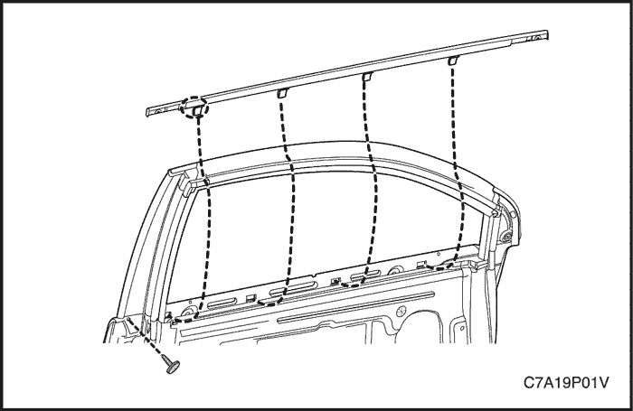
Tira de estanqueidad exterior de ventanilla
(Se muestra la puerta delantera, puerta trasera similar)
Procedimiento de desmontaje
- Baje la ventanilla completamente.
- Quite el tornillo de la tira de estanqueidad exterior de la ventanilla.
- Desmonte el espejo retrovisor exterior. Consulte la Sección 9L, Lunas y espejos.
- Desprenda de la puerta la tira de estanqueidad exterior de la ventanilla.
procedimiento de montaje
- Presione la moldura exterior del canal sobre la puerta.
Aviso: Metales distintos en contacto directo pueden corroerse rápidamente. Asegúrese de utilizar los elementos de sujeción correctos para evitar una corrosión prematura.
- Coloque el tornillo de la tira de estanqueidad exterior de la ventanilla.
Apretar
Apriete el tornillo de la tira de estanqueidad exterior de la ventanilla hasta 1,3 N•m (12 lb-pulg.).
- Monte el espejo retrovisor exterior. Consulte la Sección 9L, Lunas y espejos.
- Suba la ventanilla.
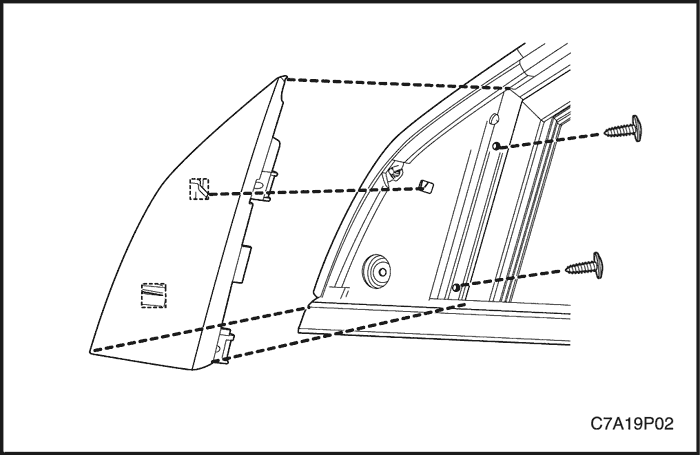
Aplique de ventanilla delantera
Procedimiento de desmontaje
- Quite los tornillos del aplique de la ventanilla delantera.
- Desmonte el aplique de la ventanilla delantera.
procedimiento de montaje
- Monte el aplique de la ventanilla delantera con sus tornillos.
Apretar
Apriete los tornillos del aplique de la ventanilla delantera hasta 1,3 N•m (12 lb-pulg.).
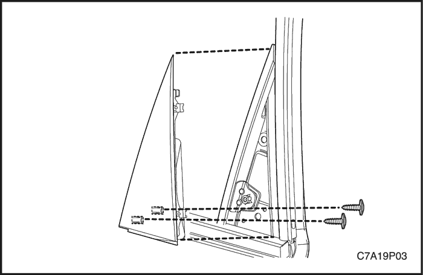
Aplique de ventanilla trasera
Procedimiento de desmontaje
- Quite los tornillos del aplique de la ventanilla trasera.
- Desmonte el aplique de la ventanilla trasera.
procedimiento de montaje
Aviso: Metales distintos en contacto directo pueden corroerse rápidamente. Asegúrese de utilizar los elementos de sujeción correctos para evitar una corrosión prematura.
- Monte el aplique de la ventanilla trasera con sus tornillos.
Apretar
Apriete los tornillos del aplique de la ventanilla trasera hasta 1,3 N•m (12 lb-pulg.).
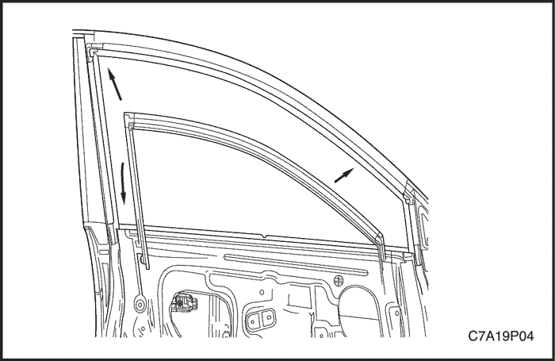
Canal de puerta delantera
(Se muestra la puerta delantera, puerta trasera similar)
Procedimiento de desmontaje
- Desmonte el espejo retrovisor exterior. Consulte la Sección 9L, Lunas y espejos.
- Desmonte el cristal de la puerta delantera. Consulte la Sección 9L, Lunas y espejos.
- Desmonte el aplique de la ventanilla delantera. Consulte el apartado "Aplique de ventana delantera" de esta sección.
- Desmonte el canal.
procedimiento de montaje
- Monte el canal.
- Monte el cristal de la puerta delantera. Consulte la Sección 9L, Lunas y espejos.
- Monte el aplique de la ventanilla delantera. Consulte el apartado "Aplique de ventana delantera" de esta sección.
- Monte el espejo retrovisor exterior. Consulte la Sección 9L, Lunas y espejos.
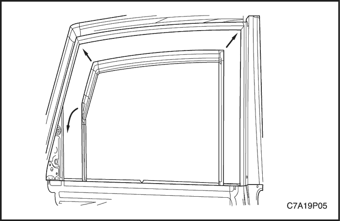
Canal de puerta trasera
Procedimiento de desmontaje
- Desmonte el cristal de la puerta trasera. Consulte la Sección 9L, Lunas y espejos.
- Desmonte el aplique de la ventanilla trasera. Consulte "Aplique de ventanilla trasera" en esta sección.
- Desmonte el canal de la puerta trasera.
procedimiento de montaje
- Monte el canal de la puerta trasera.
- Monte el aplique de la ventanilla trasera.
- Monte el cristal de la puerta trasera. Consulte la Sección 9L, Lunas y espejos.

Burlete de la puerta
(Se muestra la puerta delantera, puerta trasera similar)
Procedimiento de desmontaje
- Quite el tornillo de fijación de la varilla para mantener abierta la puerta a la carrocería y desmonte dicha varilla.
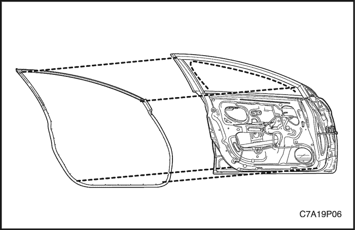
- Desmonte el burlete de la puerta.
procedimiento de montaje
- Monte el burlete de la puerta.
Aviso: Metales distintos en contacto directo pueden corroerse rápidamente. Asegúrese de utilizar los elementos de sujeción correctos para evitar una corrosión prematura.
- Monte la varilla para mantener abierta la puerta en la carrocería con su tornillo.
Apretar
Apriete el tornillo de fijación de la varilla para mantener abierta la puerta a la carrocería hasta 20 N•m (15 lb-pie).
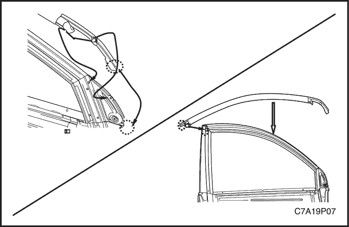
Burlete de la ventanilla de la puerta delantera
Procedimiento de desmontaje
- Desmonte el espejo retrovisor exterior. Consulte la Sección 9L, Lunas y espejos.
- Desmonte el burlete de la ventanilla de la puerta delantera.
procedimiento de montaje
- Monte el burlete de la ventanilla de la puerta delantera.
- Monte el espejo retrovisor exterior. Consulte la Sección 9L, Lunas y espejos.
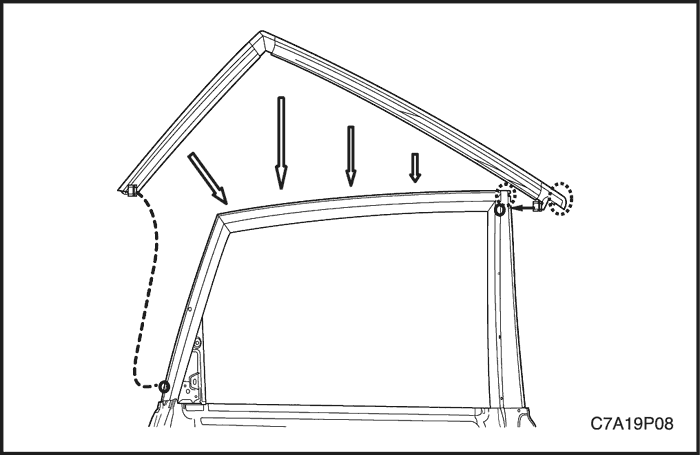
Burlete de la ventanilla de la puerta trasera
Procedimiento de desmontaje
- Desmonte el burlete de la ventanilla de la puerta trasera.
procedimiento de montaje
- Monte el burlete de la ventanilla de la puerta trasera.
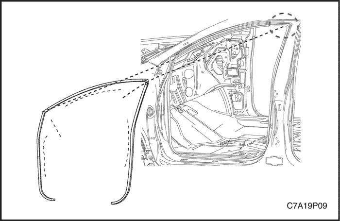
Burlete de la apertura de puerta delantera
Procedimiento de desmontaje
- Desmonte la retención de la puerta lateral delantera, montante central. Consulte la Sección 9G, Guarnecido interior.
- Desmonte el burlete de la abertura de la puerta delantera.
procedimiento de montaje
- Monte el burlete de la abertura de la puerta delantera.
- Monte la retención de la puerta lateral delantera, montante central. Consulte la Sección 9G, Guarnecido interior.
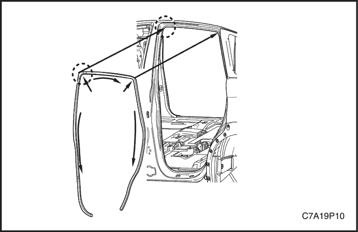
Burlete de apertura de puerta trasera
Procedimiento de desmontaje
- Desmonte la retención de la puerta lateral delantera, montante central. Consulte la Sección 9G, Guarnecido interior.
- Desmonte el burlete de la abertura de la puerta trasera.
procedimiento de montaje
- Monte el burlete de la abertura de la puerta trasera.
- Monte la retención de la puerta lateral delantera, montante central. Consulte la Sección 9G, Guarnecido interior.
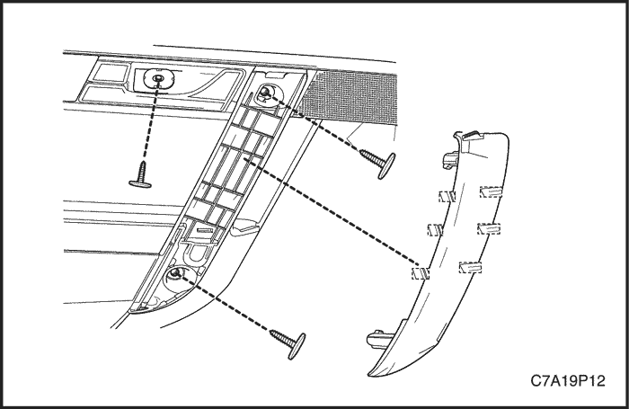
Panel de tapizado de puerta delantera
Herramientas necesarias
Extractor de elementos de acabado KM-475-B
Procedimiento de desmontaje
- Baje la ventanilla delantera.
- Desmonte la tapa del tirador de la puerta delantera.
- Quite los tornillos del panel de guarnecido de la puerta delantera.
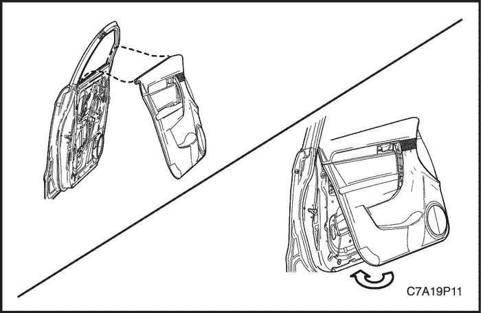
- Desmonte el panel de guarnecido de la puerta delantera con la ayuda del extractor de elementos de acabado KM-475-B.
- Desenchufe los conectores eléctricos.
procedimiento de montaje
- Monte el panel de guarnecido de la puerta delantera.
- Enchufe los conectores eléctricos.
- Coloque los tornillos del guarnecido de la puerta delantera.
Apretar
Apriete los tornillos del guarnecido de la puerta delantera hasta 3 N•m (27 lb-pulg.).
- Monte la tapa del tirador de la puerta delantera.
- Suba la ventanilla delantera.
Panel de tapizado de puerta trasera
Herramientas necesarias
Extractor de elementos de acabado KM-475-B
Procedimiento de desmontaje
- Baje la ventanilla trasera.
- Desmonte la tapa del tirador de la puerta trasera.
- Quite los tornillos del tirador de la puerta trasera.
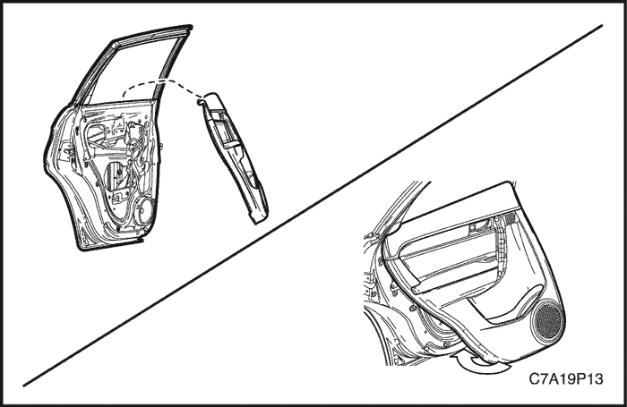
- Desmonte el panel de guarnecido con la ayuda del extractor de elementos de acabado KM-475-B.
- Desenchufe los conectores eléctricos.
procedimiento de montaje
- Monte el panel de guarnecido de la puerta trasera.
- Enchufe los conectores eléctricos.
- Coloque los tornillos del guarnecido de la puerta trasera.
Apretar
Apriete los tornillos del guarnecido de la puerta trasera hasta 3 N•m (27 lb-pulg.).
- Monte la tapa del tirador de la puerta trasera.
- Suba la ventanilla trasera.
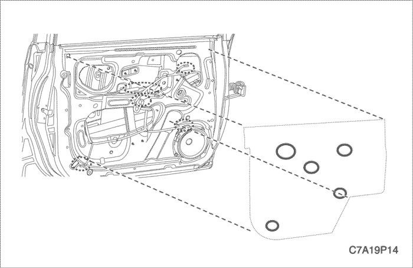
Deflector de agua de la puerta
(Se muestra la puerta delantera, puerta trasera similar)
Procedimiento de desmontaje
- Desmonte el panel de guarnecido de la puerta. Consulte "Panel de guarnecido de puerta" de esta sección.
- Desmonte el deflector de agua de la puerta.
procedimiento de montaje
- Monte el deflector de agua de la puerta.
Aviso: Metales distintos en contacto directo pueden corroerse rápidamente. Asegúrese de utilizar los elementos de sujeción correctos para evitar una corrosión prematura.
- Monte el panel de guarnecido de la puerta. Consulte "Panel de guarnecido de puerta" de esta sección.
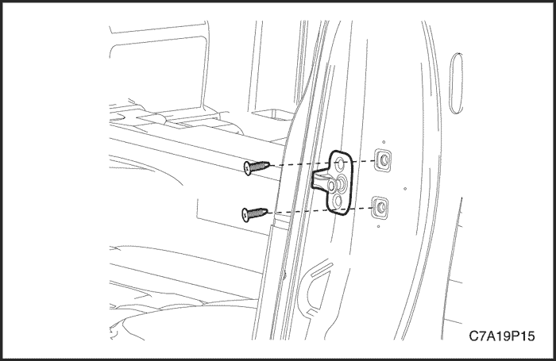
Cerradero de puerta
(Se muestra la puerta delantera, puerta trasera similar)
Procedimiento de desmontaje
- Quite los tornillos y desmonte el cerradero de la puerta. (Se muestra la puerta delantera, puerta trasera similar.)
procedimiento de montaje
Aviso: Metales distintos en contacto directo pueden corroerse rápidamente. Asegúrese de utilizar los elementos de sujeción correctos para evitar una corrosión prematura.
- Coloque los tornillos y monte el cerradero de la puerta.
Apretar
Apriete los tornillos del cerradero de la puerta hasta 24 N•m (18 lb-pie).
Ajuste del cerradero de la puerta
(Se muestra la puerta delantera, puerta trasera similar)
El trinquete de la cerradura de la puerta consiste en un cerradero con dos tornillos roscados en una placa soporte flotante situada en los correspondientes montantes de la carrocería. Esta placa soporte flotante permite que se ajuste el cerradero con facilidad hacia adentro y hacia afuera, hacia arriba y hacia abajo.
La puerta queda asegurada en posición de cierre cuando la horquilla de la cerradura salta y engancha el cerradero.
Aviso: El trinquete de la cerradura (cerradero) de la puerta es una pieza de fijación importante que puede afectar el rendimiento de componentes vitales del sistema, por lo que puede causar gastos de reparación importantes. Si su sustitución llega a ser necesaria, el trinquete de la cerradura de la puerta debe sustituirse por una que tenga la misma referencia de pieza o por una equivalente. No utilice una pieza de repuesto de menor calidad o un diseño sustituto. Los valores de par especificados deben aplicarse durante el montaje para garantizar la sujeción correcta de la pieza.
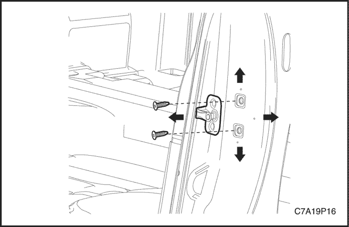
Ajuste hacia arriba/hacia abajo y hacia afuera/hacia adentro
Tal vez haya que ajustar el cerradero hacia arriba y hacia abajo o hacia adentro y hacia afuera por diversas razones:
- Daños en el bastidor del vehículo a consecuencia de una colisión.
- Montaje de un burlete de la puerta nuevo.
- Reclamaciones del cliente por exceso de ruido de viento.
- Dificultad a la hora de abrir y cerrar la puerta.
Para ajustar el cerradero hacia arriba y hacia abajo o hacia adentro y hacia afuera, ejecute el siguiente procedimiento:
- La puerta debe estar correctamente alineada.
- Afloje los tornillos del cerradero.
- La placa soporte flotante puede desplazarse levemente utilizando los extremos de los tornillos del cerradero. Desplace la placa soporte flotante a la posición deseada.
- Si para llevar a cabo un ajuste correcto es necesario desplazar la placa soporte flotante más allá de lo posible, utilice un taladro eléctrico y una broca de lima giratoria de 3/8 de pulgada con extremo plano para ampliar la abertura de la carrocería en la dirección deseada.
Aviso: Es importante utilizar una broca con extremo plano para no dañar la placa soporte flotante roscada. Los tornillos del cerradero y la placa soporte flotante roscada son piezas importantes que podrían afectar el rendimiento de los componentes y sistemas.
- Apriete los tornillos del cerradero de la puerta en la posición correcta.
- Apriete los tornillos del cerradero de la puerta en la posición correcta.
Apretar
Apriete los tornillos del cerradero de la puerta hasta 24 N•m (18 lb-pie).
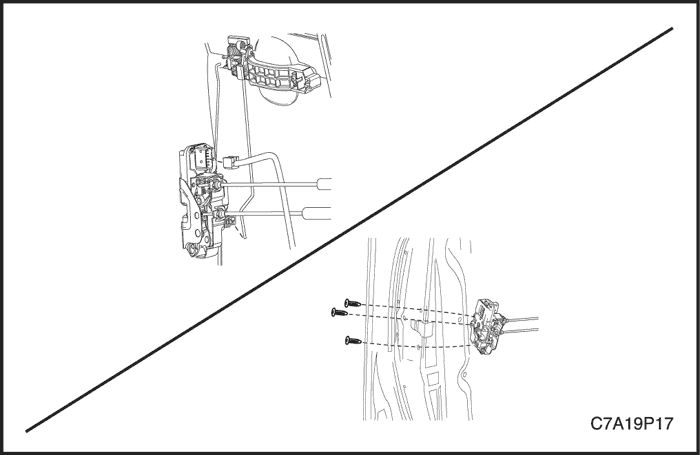
Puerta delantera Cierre
Procedimiento de desmontaje
- Desconecte el cable negativo de la batería.
- Desmonte el guarnecido de la puerta delantera. Consulte "Panel de guarnecido de puerta delantera" de esta sección.
- Desmonte el deflector de agua. Consulte el apartado "Deflector de agua de puerta" de esta sección.
- Quite los tornillos y desmonte la cerradura de la puerta delantera.
- Desconecte las varillas de la cerradura.
- Desenchufe el conector eléctrico.
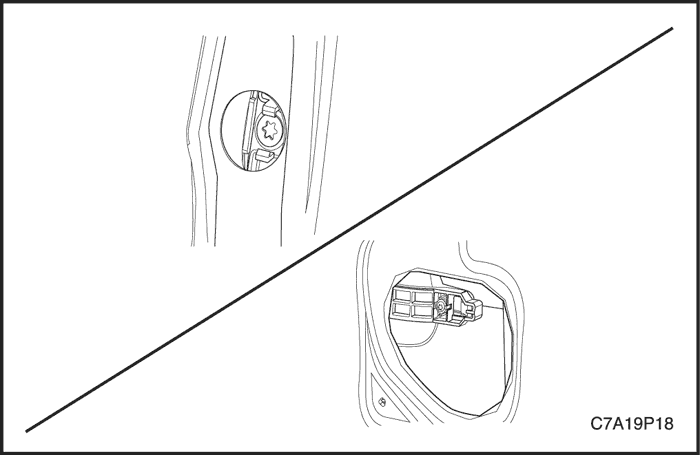
procedimiento de montaje
- Enchufe el conector eléctrico.
- Conecte las varillas de la cerradura.
Aviso: Metales distintos en contacto directo pueden corroerse rápidamente. Asegúrese de utilizar los elementos de sujeción correctos para evitar una corrosión prematura.
- Coloque la cerradura de la puerta delantera con sus tornillos.
Apretar
Apriete el tornillo de la cerradura de la puerta delantera hasta 10 N•m (89 lb-pulg.)
- Monte el deflector de agua. Consulte el apartado "Deflector de agua de puerta" de esta sección.
- Monte el guarnecido de la puerta delantera. Consulte "Panel de guarnecido de puerta delantera" de esta sección.
- Conecte el cable negativo de la batería.
Tirador exterior de puerta delantera
Procedimiento de desmontaje
- Desmonte el deflector de agua de la puerta. Consulte el apartado "Deflector de agua de puerta" de esta sección.
- Quite la tapa del tornillo del tirador exterior de la puerta.
- Quite el tornillo del tirador exterior de la puerta por la cara cerrada de la puerta.
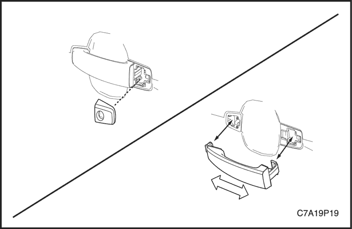
- Desmonte el tirador exterior de la puerta deslizando hacia atrás y tirando de la puerta.
- Quite la junta si fuera necesario.
procedimiento de montaje
- Coloque la junta si fuera necesario.
Aviso: Metales distintos en contacto directo pueden corroerse rápidamente. Asegúrese de utilizar los elementos de sujeción correctos para evitar una corrosión prematura.
- Monte el tirador poniéndolo en su sitio y deslizándolo hacia atrás asegurándose de que enganche con la tapa del tirador exterior de la puerta.
- Monte la tapa del tirador exterior de la puerta.
- Coloque el tornillo del tirador exterior de la puerta por la cara cerrada de la puerta.
Apretar
Apriete los tornillos del tirador exterior de la puerta hasta 4,5 N•m (40 lb-pulg.).
- Coloque la tapa del tornillo del tirador exterior de la puerta.
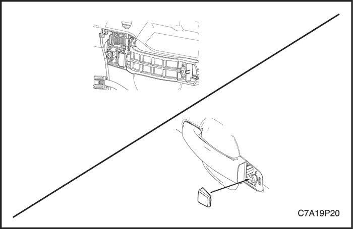
Tirador exterior de puerta trasera
Procedimiento de desmontaje
- Desmonte el deflector de agua de la puerta. Consulte el apartado "Deflector de agua de puerta" de esta sección.
- Quite los tornillos del tirador exterior de la puerta.
- Quite el tornillo del tirador exterior de la puerta por la cara cerrada de la puerta.
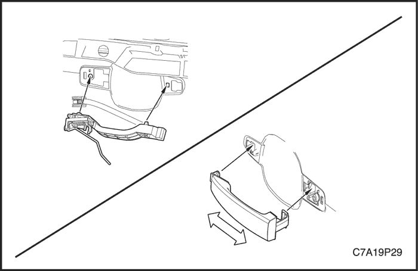
- Desmonte el tirador exterior de la puerta deslizando hacia atrás y tirando de la puerta.
- Quite la junta si fuera necesario.
procedimiento de montaje
- Coloque la junta si fuera necesario.
Aviso: Metales distintos en contacto directo pueden corroerse rápidamente. Asegúrese de utilizar los elementos de sujeción correctos para evitar una corrosión prematura.
- Monte el tirador poniéndolo en su sitio y deslizándolo hacia atrás asegurándose de que enganche con el tirador exterior de la puerta.
- Coloque los tornillos del tirador exterior de la puerta.
Apretar
Apriete los tornillos del tirador exterior de la puerta hasta 4,5 N•m (40 lb-pulg.).
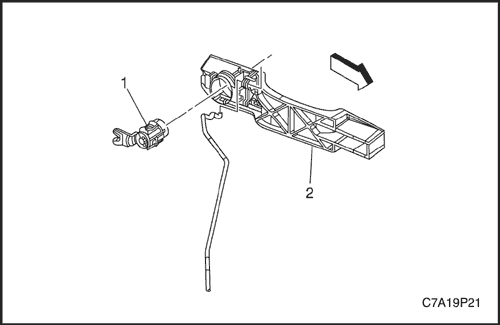
Cilindro de bloqueo de la puerta
(Se muestra la puerta delantera, puerta trasera similar)
Procedimiento de desmontaje
- Desmonte el deflector de agua de la puerta. Consulte el apartado "Deflector de agua de puerta" de esta sección.
- Desconecte la varilla de bloqueo del tirador exterior de la puerta.
- Desmonte el clip de retención y el cilindro de la cerradura.
procedimiento de montaje
- Monte el cilindro de la cerradura con el clip de retención.
- Conecte la varilla de bloqueo del tirador exterior de la puerta.
- Monte el deflector de agua de la puerta. Consulte el apartado "Deflector de agua de puerta" de esta sección.
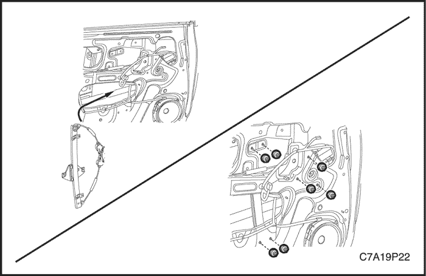
Regulador de ventanillas eléctricas
(Se muestra la puerta delantera, puerta trasera similar)
Procedimiento de desmontaje
- Desconecte el cable negativo de la batería.
- Desmonte el cristal de la puerta. Consulte la Sección 9L, Lunas y espejos.
- Desenchufe el conector eléctrico.
- Quite las tuercas y desmonte el elevalunas.
procedimiento de montaje
Aviso: Metales distintos en contacto directo pueden corroerse rápidamente. Asegúrese de utilizar los elementos de sujeción correctos para evitar una corrosión prematura.
- Monte el elevalunas con sus tuercas.
Apretar
Apriete las tuercas del elevalunas hasta 10 N•m (89 lb-pulg.).
- Enchufe el conector eléctrico.
- Monte el cristal de la puerta. Consulte la Sección 9L, Lunas y espejos.
- Conecte el cable negativo de la batería.
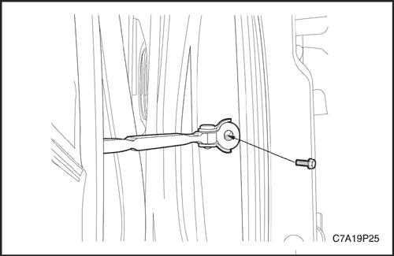
Conjunto de puerta
Procedimiento de desmontaje
- Desconecte el cable negativo de la batería.
- Quite el tornillo y desmonte la varilla para mantener abierta la puerta de la carrocería.
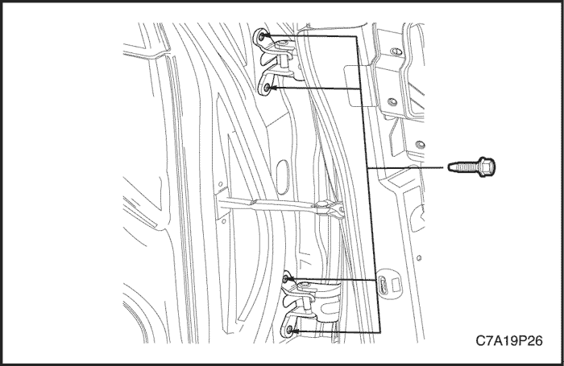
- Con la ayuda de otro técnico, quite los tornillos de la bisagra de la puerta y desmonte la puerta delantera. (Se muestra la puerta delantera, puerta trasera similar.)
- Desconecte el pasacables de goma de la puerta a la carrocería y el conector eléctrico.
procedimiento de montaje
- Enchufe el conector eléctrico y conecte el pasacables de goma de la puerta a la carrocería.
Aviso: Metales distintos en contacto directo pueden corroerse rápidamente. Asegúrese de utilizar los elementos de sujeción correctos para evitar una corrosión prematura.
- Con la ayuda de otro mecánico, sujete un poco la puerta delantera con los tornillos de la bisagra. (Se muestra la puerta delantera, puerta trasera similar.)
- Ajuste la puerta para que encaje correctamente.
Apretar
Apriete los tornillos de fijación de la bisagra de la puerta a la carrocería hasta 27,5 N•m (20 lb-pie).
- Monte la varilla para mantener abierta la puerta en la carrocería con sus tornillos.
Apretar
Apriete el tornillo de fijación de la varilla para mantener abierta la puerta a la carrocería hasta 20 N·m (15 lb-pie).
- Conecte el cable negativo de la batería.
- Efectúe la prueba de infiltración de agua. Consulte la Sección 9I, "Infiltraciones de agua".
- Compruebe si oye ruido de viento. Consulte la Sección 9J, Ruido del viento.
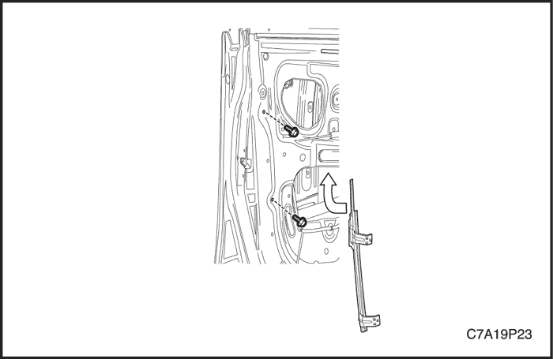
Retención de ventanilla delantera
Procedimiento de desmontaje
- Desconecte el cable negativo de la batería.
- Desmonte el cristal de la puerta delantera. Consulte la Sección 9L, Lunas y espejos.
- Desmonte el elevalunas eléctrico. Consulte el apartado "Elevalunas eléctrico" de esta sección.
- Quite los tornillos y desmonte la retención de la ventanilla delantera.
procedimiento de montaje
- Monte la retención de la ventanilla delantera con sus tornillos.
Apretar
Apriete los tornillos de la retención de la ventanilla delantera hasta 10 N•m (89 lb-pulg.).
- Monte el elevalunas eléctrico. Consulte el apartado "Elevalunas eléctrico" de esta sección.
- Monte el cristal de la puerta delantera. Consulte la Sección 9L, Lunas y espejos.
- Conecte el cable negativo de la batería.
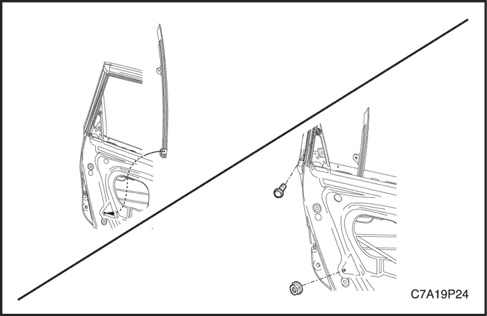
Retención de ventanilla trasera
Procedimiento de desmontaje
- Desconecte el cable negativo de la batería.
- Desmonte el cristal de la puerta trasera. Consulte la Sección 9L, Lunas y espejos.
- Desmonte el elevalunas eléctrico. Consulte el apartado "Elevalunas eléctrico" de esta sección.
- Desmonte el guarnecido superior de la puerta trasera.
- Quite el tornillo y la tuerca y desmonte la retención de la ventanilla trasera.
procedimiento de montaje
- Monte la retención de la ventanilla trasera con su tornillo y su tuerca.
Apretar
Apriete la tuercas y el tornillo de la retención de la ventanilla trasera hasta 10 N•m (89 lb-pulg.).
- Monte el guarnecido superior de la puerta trasera.
- Monte el elevalunas eléctrico. Consulte el apartado "Elevalunas eléctrico" de esta sección.
- Monte el cristal de la puerta trasera. Consulte la Sección 9L, Lunas y espejos.
- Conecte el cable negativo de la batería.
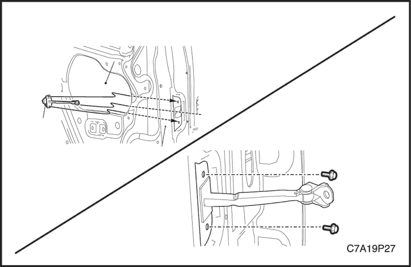
Articulación para mantener la puerta abierta
(Se muestra la puerta delantera, puerta trasera similar)
Procedimiento de desmontaje
- Desmonte el deflector de agua de la puerta. Consulte el apartado "Deflector de agua de puerta" de esta sección.
- Quite los tornillos de la puerta y la carrocería.
- Desmonte la varilla para mantener abierta la puerta.
procedimiento de montaje
Aviso: Metales distintos en contacto directo pueden corroerse rápidamente. Asegúrese de utilizar los elementos de sujeción correctos para evitar una corrosión prematura.
- Monte la varilla para mantener abierta la puerta con sus tornillos en la puerta y en la carrocería.
Apretar
Apriete el tornillo de fijación de la varilla para mantener abierta la puerta a la carrocería hasta 20 N•m (15 lb-pie).
Apriete los tornillos de fijación de la varilla para mantener abierta la puerta a la puerta hasta 9 N•m (80 lb-pulg.).
- Monte el deflector de agua de la puerta. Consulte el apartado "Deflector de agua de puerta" de esta sección.
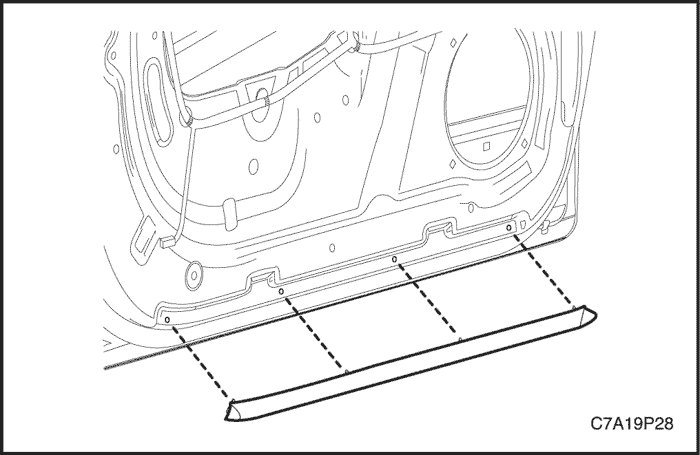
Burlete inferior de puerta
(Se muestra la puerta delantera, puerta trasera similar)
Procedimiento de desmontaje
- Desmonte el burlete inferior de la puerta.
procedimiento de montaje
Aviso: Metales distintos en contacto directo pueden corroerse rápidamente. Asegúrese de utilizar los elementos de sujeción correctos para evitar una corrosión prematura.
- Monte el burlete inferior de la puerta.
DESCRIPCIÓN GENERAL Y FUNCIONAMIENTO DEL SISTEMA
Cebador de bloqueo de la puerta
Los cerraderos de las puertas delanteras y traseras constan cada uno de un cerradero con dos tornillos roscados en una placa soporte flotante que hay en los montantes B y C. La puerta queda asegurada en posición de cierre cuando la horquilla de la cerradura salta y engancha el cerradero.
Cierres de puerta eléctricos
Las cerraduras eléctricas utilizan un solenoide que está situado en el interior de cada conjunto de cerradura. Las cerraduras de las puertas se activan mediante el actuador del tirador interior de la puerta o mediante el cilindro de la cerradura sólo en la puerta del conductor. Cuando se abre o se cierra la puerta del conductor mediante el actuador o el cilindro de la cerradura, se abren o se cierran todas las puertas a la vez.
Ventanillas eléctricas
Los elevalunas eléctricos se controlan mediante interruptores eléctricos situados en los paneles de las puertas y se accionan mediante un motor en cada elevalunas. Cada puerta tiene un interruptor para controlar su ventanilla, y la puerta del conductor tiene cuatro interruptores para controlar todas las ventanillas del vehículo. Los cristales se bajan pulsando el interruptor y se suben tirando del interruptor hacia arriba. La ventanilla dejará de moverse cuando se suelte el interruptor o cuando esté completamente abierta o cerrada.
La ventanilla del conductor se abre de forma automática. La ventanilla bajará al pulsar y soltar el interruptor y sólo se detendrá cuando se vuelva a accionar el interruptor o cuando la ventanilla esté completamente abierta.
La puerta del conductor también tiene un botón que, al pulsarlo, impide el funcionamiento de las ventanillas de la puerta de pasajero delantera o de las puertas traseras.